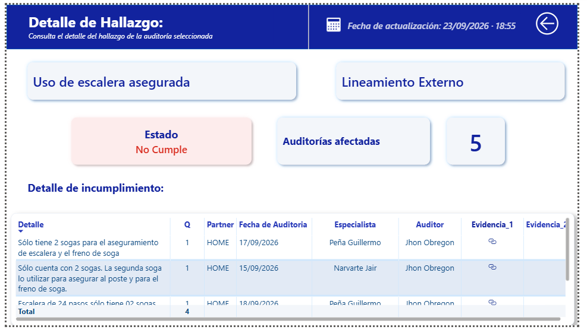

% de cumplimiento por especialista
Tiempo promedio de atención (h)
Instalaciones auditadas por semana
1801–07 Sep
408–14 Sep
Instalaciones auditadas por especialista
Estado de instalaciones
Motivos de órdenes reprogramadas / fallidas
384Total instalaciones145Auditadas38 %Avance
Detalle de hallazgo
Consulta el detalle del hallazgo de la auditoría seleccionadaUso de escalera asegurada
Lineamiento Externo
Detalle de incumplimiento
| Detalle | Cantidad | Partner | Fecha de auditoría | Evidencia |
|---|---|---|---|---|
| Se requiere asegurar correctamente la escalera y el freno de soga. | 1 | HOME | 17/09/2026 | 🔗 |
| Se requiere utilizar la segunda soga para asegurar la escalera. | 1 | HOME | 15/09/2026 | 🔗 |
| Validar disponibilidad y uso del equipo de seguridad. | 1 | HOME | 18/09/2026 | 🔗 |
Imagen compartida
